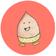
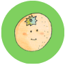
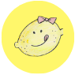
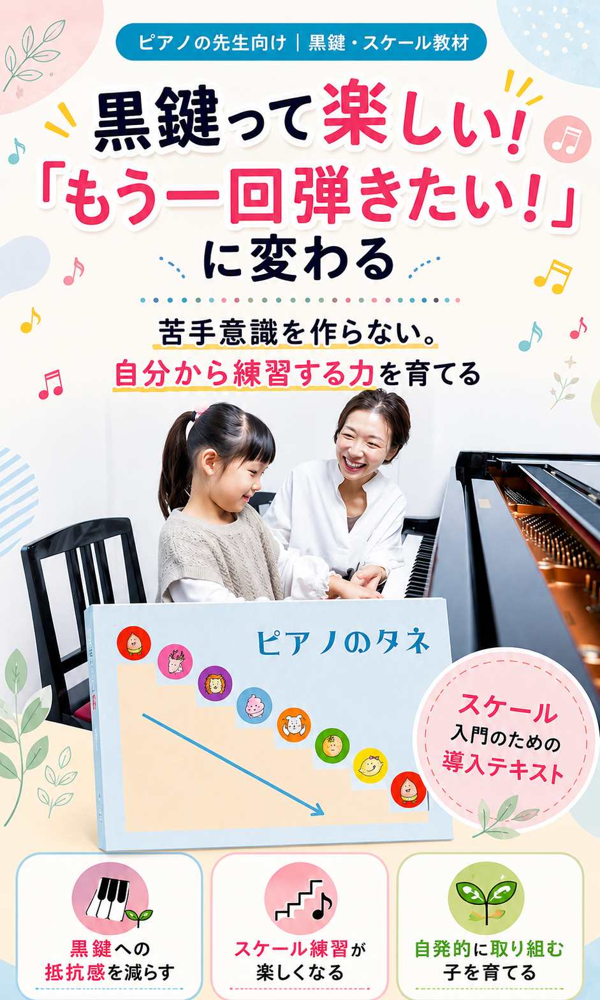
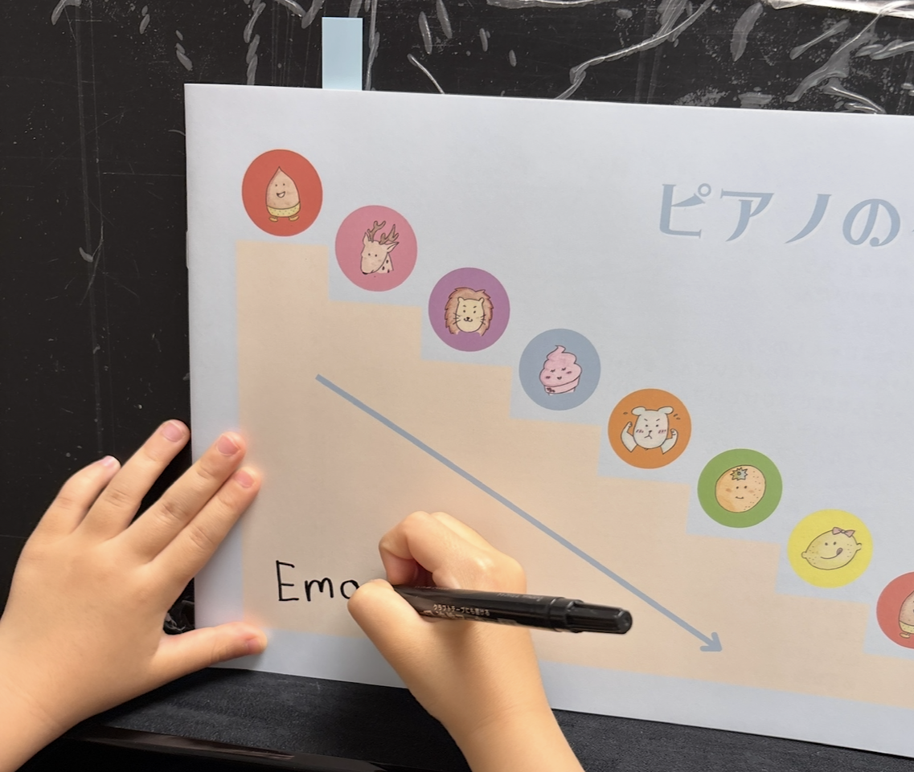
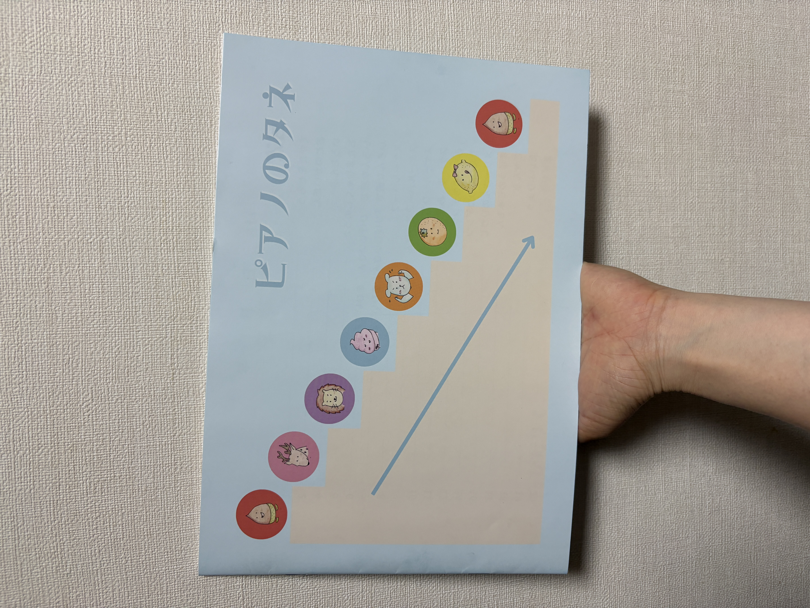
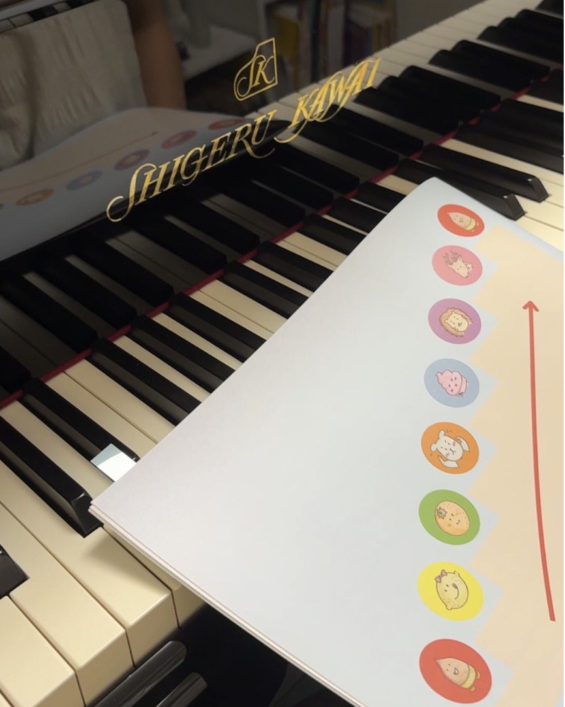
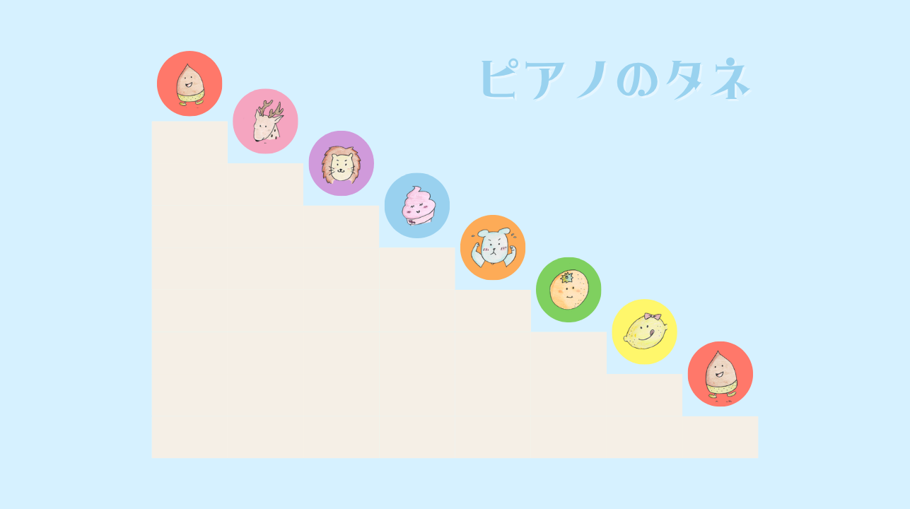

わかる → できる → 楽しい！

こんな悩み、ありませんか？
「ピアノのタネ」を使うと
この変化を、あなたの教室でも起こしませんか？
今すぐ申し込む 39,800円（税込）・詳細は下記参照コンセプト
「黒鍵アレルギーを作りたくない」
「調感覚を体で覚えてほしい」
「先生に言われる前に、自分で気づいてほしい」
18年間の現場指導で感じたその思いから、
「ピアノのタネ」は生まれました。
この流れを、幼児でも体験できる教材設計です。

教材内容
黒鍵への理解
調感覚の育成
自発性・主体性
スケール準備


ページをめくってみてね
「うちの生徒にもできそう」を感じてください

選ばれる理由
机上の理論ではなく、実際に50名以上を指導してきた経験が全ページに凝縮されています。
3歳からでも使えるビジュアル中心の構成。先生が説明する前に「わかった！」が生まれます。
黒鍵を恐怖体験にさせない独自アプローチ。学習の早い段階で黒鍵に慣れさせます。
受け身の練習から脱却。「もっと弾きたい」という気持ちを引き出す設計です。
この教材を使うことで、後のスケール学習がスムーズに。実績として50名中40名以上が証明。
学習速度や理解度が違う生徒にも、辞書のように使えるので無理なく対応できます。
実績・変化
講師プロフィール
ピアノ講師 / 指導歴18年
子どもの頃、私自身も「黒鍵が怖い」「調号がわからない」という経験をしました。 わからないのに先に進む、その苦しさを知っているからこそ——
「この子の前で、同じ壁を作りたくない」
そう思いながら18年間、50名以上の生徒と向き合ってきました。
何度も試行錯誤を重ねて生まれたのが「ピアノのタネ」です。
わかる→できる→楽しい、この順番を全ての子どもに体験させてあげたいと思っています。
料金・お申込み
生徒1人につき1冊 / 使用期間1〜2年
1日あたり約54円〜108円で導入可能
STEP 1：申し込み
下のボタンから申込フォームに進みます。
STEP 2：入金確認
ご入金後、確認メールをお送りします。
STEP 3：発送
入金後5営業日以内に教材を発送いたします。
よくある質問
はい、3歳から使えるよう設計されています。ビジュアル中心の構成なので、ひらがなが読めなくても理解できます。実際に年中さんからご使用いただいており、1年で指くぐりができるようになった事例もあります。
対応しやすい設計です。辞書のように繰り返し使えるため、学習ペースや理解度に合わせて柔軟に使うことができます。画像やキャラクターを用いた視覚的なアプローチが、様々な特性を持つ子に有効です。
はい。この教材は「スケールへの土台を作る」ことが目的です。黒鍵・調感覚・指くぐりを段階的に身につけることで、スケール学習がスムーズになります。スケールが苦手な段階の生徒にこそ、お勧めします。
可能です。現在お使いのテキストや教材と並行してご使用いただけます。辞書的な使い方ができるので、特定のタイミングに応じてピンポイントで活用することもできます。
コピーでのご利用はお断りしております。生徒1人につき1冊のご購入をお願いしています。ご理解とご協力をお願いいたします。
現在制作中で、今後追加予定です。購入いただいた方にはアップデート案内をお送りします。動画追加時に別途費用は発生しません。
詳細は申込後にご案内いたします。お申し込みいただく際にご不明な点がございましたら、お気軽にお問い合わせください。
音楽を一生楽しめる力を、
あなたの教室から育てていきませんか。
ご不明な点はお気軽にお問い合わせください